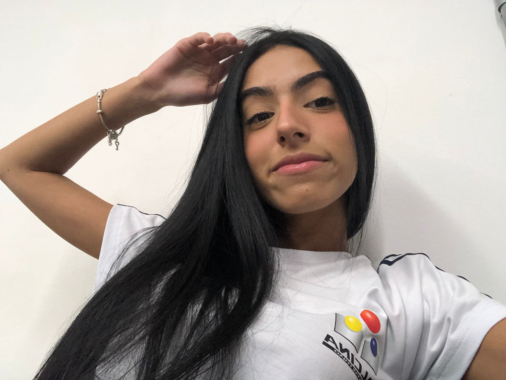

EME Alcina dantas feijão

Meu
Portifolio
Meu nome é Yasmin Ferreira
Hard skills
Analise de dados
Programação
Gestão de projetos
Soft skills
Trabalho em equipe
Comunicação
Organização
|
|
|
|
|
|
|
|
|
|
|
|
|
|
|
Nos próximos anos pretendo focar em adquirir habilidades técnicas e obter certificações
em odontologia, participando de cursos, workshops e congressos para ampliar minha
experiência em clínica.
Interesse Profissional a Médio Prazo (3 a 4 anos):
Assumir um papel
de liderança na clínica odontológica, gerenciando equipes e coordenando tratamentos
além de implementar práticas novas,
Interesse Profissional a Longo Prazo (4 anos e além)
Me estabelecer como um especialista reconhecida em uma área específica da odontologia contribuindo para o avanço da prática através de pesquisa e inovação.
